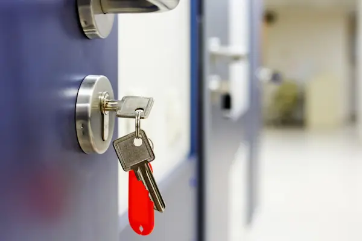

Gewerbe, Hausverwaltung und Objekte
Für Ladenlokale, Praxen, Büros und Mehrfamilienhäuser planen wir die Schließung so, dass am Ende klar ist, wer wohin kommt: Generalschlüssel für die Verwaltung, eigene Berechtigungen für Mieter, Personal oder Reinigung. Ob mechanisch oder elektronisch, entscheiden wir gemeinsam nach Größe des Objekts und danach, wie oft sich Berechtigungen ändern.
Bestehende Anlagen erweitern wir, statt sie komplett zu ersetzen, solange das Profil lieferbar ist. Geht in einem Objekt ein Schlüssel verloren, muss deshalb nicht alles neu: Oft genügt es, die betroffenen Zylinder zu tauschen und die Anlage nachzuziehen. Details dazu auf der Seite zu Schließanlagen.